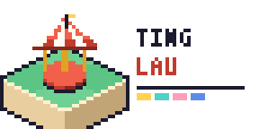

頂樓樂園TÍNG-LÂU LO̍K-HNÎG · ROOFTOP PLAYLAND高雄市鹽埕區七賢三路 1XX 號・七賢百貨 R 樓
SINCE 1965 · (07) 551-1965
頂樓樂園——七賢百貨屋頂上的遊樂場
今日開園
| 時間 | 週三–週五 | 週六・週日 |
|---|---|---|
| 10:00 | 包場時段 | 開門・電梯開到 R |
| 14:00 | 開門・木馬第一圈 | 木馬換新曲（每月第一週） |
| 16:30 | 小火車「放學班」：持學生證免代幣一趟 | |
| 18:10 | 點燈——摩天輪 16 顆燈、木馬 12 顆燈依序亮起 | |
| 20:40 | 最後一圈廣播（1979 年錄的老錄音帶，蔡金發的聲音） | |
| 21:00 | 關門・電梯停在 7F | |
- 旋轉木馬2 枚・NT$40
- 迷你摩天輪3 枚・NT$60
- 屋頂小火車2 枚・NT$40
- 咖啡杯2 枚・NT$40
- 投幣電動馬1 枚・NT$20
- 彩色球池3 枚・NT$60
代幣在電梯口的換幣機換，只收十元與五十元硬幣。用不完的代幣永遠有效，1988 年的舊代幣（中間有洞那款）也收。
THREE GENERATIONS · 三代
吊車把木馬吊上七樓的那天
1965 年冬天，蔡金發從大阪千日前一家要拆的百貨公司「屋上遊園地」，買回一台 1952 年製的十二座旋轉木馬。七賢百貨的電梯塞不下，他租了兩台吊車，從七賢三路把木馬一片一片吊上屋頂——那天鹽埕的騎樓下站滿了人，有人說比愛河的龍舟還好看。
1988 年蔡秀鳳接手，加了投幣電動馬和咖啡杯；2009 年百貨換了老闆，屋頂停了七年。2016 年孫子蔡承恩從臺北的遊戲公司辭職回來——他在公司畫了八年等角像素地圖——第一件事是把屋頂每一格地磚都畫進電腦，然後才開始修馬。
風車花園：屋頂西南角插著四十二支風車，風從愛河口吹上來。